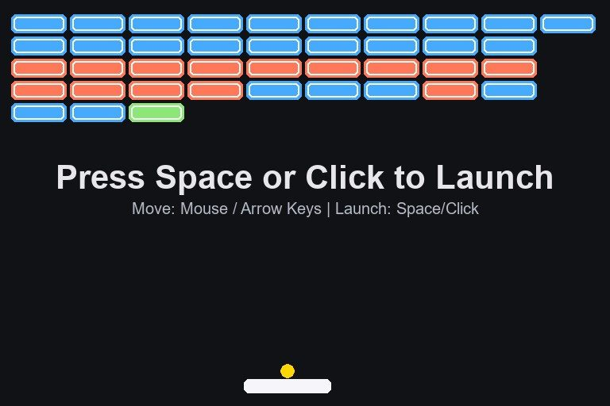
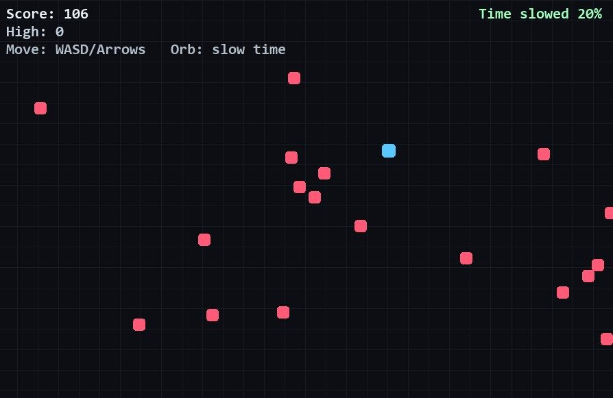
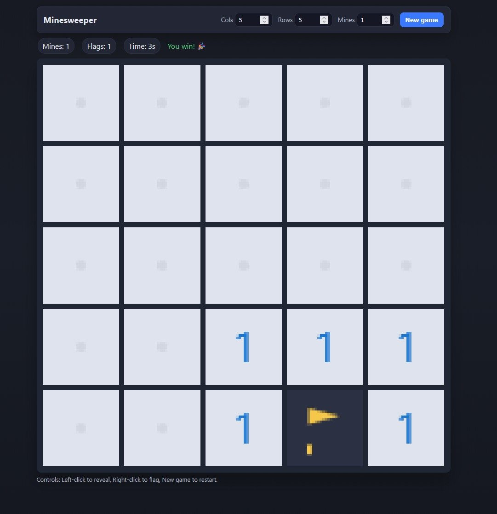

[lynx@web ~]$ █
Visuals
Brick Breaker · Pygame
Cave Flyer · Pygame
Minesweeper · web
Gallery
Screenshots and stills from prototypes. Full clips live in portfolio.



→ portfolio session for showreels and project writeups.